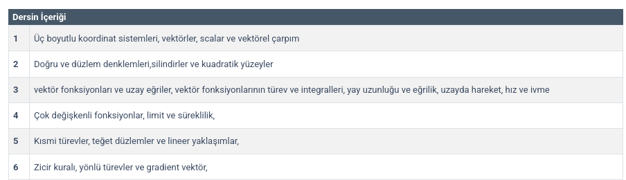

Birincil ders malzemesi
Kullanıcının sağladığı 156 JPG ders/defter fotoğrafı ve mufredat.png. Dosya tarihleri ders tarihi olarak varsayılmadı. Konu-fotoğraf eşleştirmesi fotoğraf dizinindedir.
Dersin kapsamı, fotoğrafların nasıl kullanıldığı ve kaynaklara erişim durumu.

Kullanıcının sağladığı 156 JPG ders/defter fotoğrafı ve mufredat.png. Dosya tarihleri ders tarihi olarak varsayılmadı. Konu-fotoğraf eşleştirmesi fotoğraf dizinindedir.
Dersin belirtilen kitabı. Wiley 10. baskı bölüm diziniyle vektör diferansiyel hesabı başlığı eşleştirildi; tam kitap dosyası sağlanmadı. Kitaptan birebir metin veya soru aktarımı yapılmadı.
Kaynağı aç ↗Sungkyunkwan / Kim Munhyeon, vektörler ve vektör fonksiyonları. Açık üniversite notu kavram ve formül kontrolünde kullanıldı. Buradaki Türkçe açıklamalar ve çözümler özgün olarak yazıldı.
Kaynağı aç ↗Kullanıcının verdiği bibliyografya: İ. N. Cangül çevirisi, Nobel, 2013. Tam metne erişilmedi; baskıya özgü sayfa ve soru numarası atfedilmedi.
Kullanıcının verdiği bibliyografya: Sürat, 2013. Tam metin sağlanmadı; bu kitaptan doğrulanmış alıntı veya sayfa atfı yapılmadı.
Denis Auroux, 2007. Ders düzeni ve kavram denetimi için açık ders dizini. Müfredat dışındaki çok katlı integraller ve integral teoremleri bu çalışmaya eklenmedi.
Kaynağı aç ↗Gradyanın teğet düzlem ve yönlü türevle ilişkisi için açık teknik kontrol kaynağı. Konuya eklenen örnekler özgün pekiştirme sorularıdır.
Kaynağı aç ↗PDF’ler XeLaTeX ile derlendi. Formüller resim olarak yapıştırılmadı. Web anlatımı ve PDF’ler aynı içerik verisinden üretildi. Matematik çizimleri TikZ/PGFPlots ile oluşturuldu. Sitenin çalışması için internet bağlantısı gerekmez; formül motoru ve yazı tipleri yereldir.
LaTeX kaynaklarını indir ↗ · Birleşik ders kitabı ↗ · Fotoğraf inceleme raporu ↗